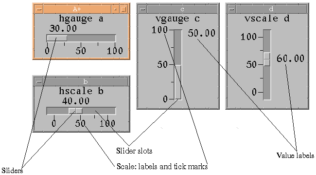

The vscale class is like the hscale class, with a few obvious differences, such as the effects of the justification attributes. See the description of the hgauge class.Also see "Hscale and Vscale Objects", in "User Interactions with Displays".

Attributes
See the "Display Attributes" chapter for details concerning all the attributes that apply to objects in the vscale display class, as well as lists of colors and fonts. The keys in the Table of All Display Attributes that pertain to this class are vS, ALL, CNFT, GS, NFT, and TOP.The attributes that are meaningful for the vscale display class (other than the print... attributes) are:
active (Point the mouse cursor to an attribute to display a short description at the bottom of the screen)
ancestors
arrowdown
arrowkeys
arrowleft
arrowlist
arrowright
arrowup
at
atsector
b
bg
bound
class
clear
deiconized
doc
downto
dynamic
edit
editbg
editfg
editspace
eval
evaluate
execute
exit
extent
f1-f12
fg
fkeys
focus
followers
followertree
font
foot
freeze
fullscreen
H
h
has
head
hide
hl
hlthickness
icon
iconic
iconized
icontitle
in
inc
incurrentworkspace
is
l
labelfg
labelfont
labelinc
labeljustify
labelout1
leader
leftto
literal
lower
majorticksize
mapped
max
maxtitle
maxtitlefg
maxtitlefont
maxtitlejustify
min
minortickcount
minorticksize
mintitle
mintitlefg
mintitlefont
mintitlejustify
naturalsize
notify
out1
outofcurrentworkspace
pageinc
parent
pin
preset
primary
r
raise
realize
refresh
request
resize
resizeable
rightto
script
sensitive
set
settings
shadowthickness
shell
shelltitle
show
sliderbg
sliderheight
sliderwidth
state
stateself
subtitle
subtitlefg
subtitlefont
subtitlejustify
syncshow
t
tabfrom
tablist
tabto
title
titlefg
titlefont
titlejustify
upto
valuefg
valuefont
valuejustify
vcol
vcols
verify
vrow
vrows
W
w
ws
X
x
xs
Y
y
ys
YX
yx
yxs1. Note that labelout is used to format the scale labels and out to format the value label.
| doc@aplusdev.org | © Copyright 1995–2008 Morgan Stanley Dean Witter & Co. All rights reserved. |